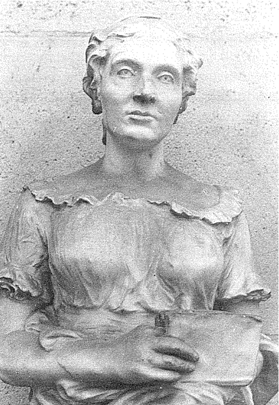
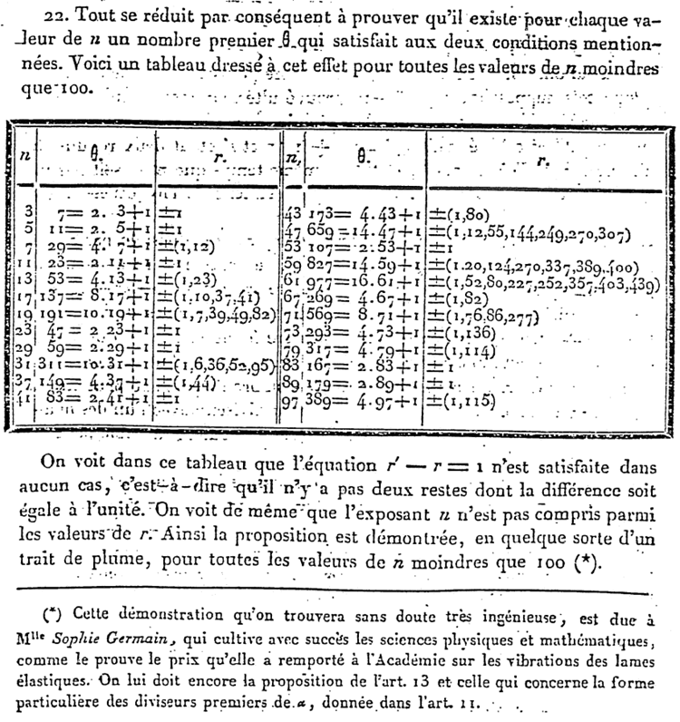
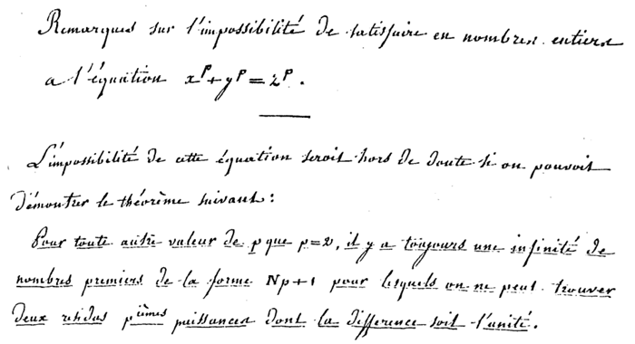
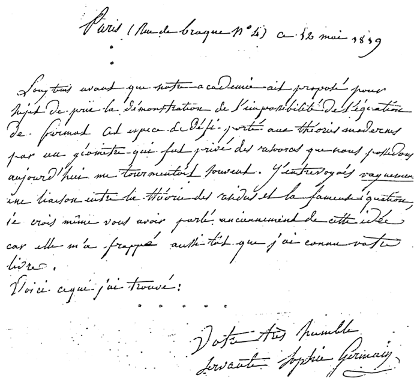
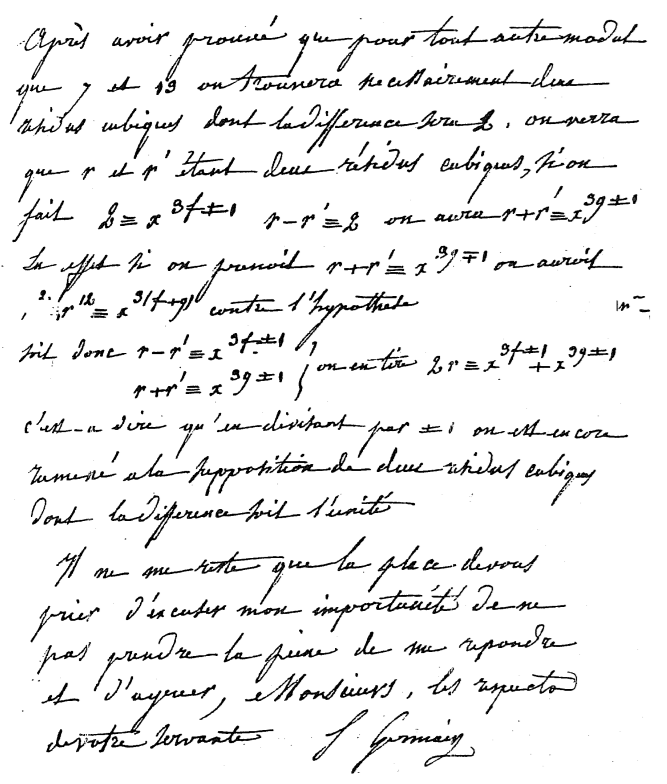

Imagine a film proposal in which the fictional protagonist, without any apparent formal education or mentoring, and despite strong parental discouragement, teaches herself as a child to university level in mathematics, while a bloody revolution rages for years outside the door. Although our character is prohibited from attending university, she engages in gender impersonation to gain access to the world’s top researchers, and they provide mentorship encouraging original and substantial research. Along the way she protects the world’s top mathematician from an advancing army, fearing he could suffer the same fate as Archimedes, said to have died on the sword of a Roman soldier.
架空の主人公が、正式な教育や指導を一切受けず、両親の強い反対にも屈することなく、幼い頃から独学で大学レベルの数学を習得する映画企画を想像してみてください。その間、家の外では何年も血なまぐさい革命が繰り広げられています。主人公は大学進学を禁じられていますが、世界トップクラスの研究者に近づくために性別を偽り、彼らから指導を受け、独創的で意義深い研究に励みます。その過程で、彼女は世界最高の数学者を迫りくる軍隊から守ります。ローマ兵の剣で命を落としたとされるアルキメデスと同じ運命を辿ることを恐れたからです。
Our film’s leading persona becomes the first woman we know of to do important original research in mathematics. She wins a gold medallion prize for her attempted solution to a challenge in elasticity theory set by the academy of sciences. And in number theory she devises a plan for solving another prize problem. This second challenge was an amazing claim about numbers from almost two centuries prior, and it became the most famous unsolved problem in mathematics for another century and a half, until its resolution just a few decades ago. Our protagonist’s research carries her plan of solution an impressively long way, as revealed in handwritten manuscripts examined only very recently (just as the imaginary film proposal was being written!). This discovery, although two centuries delayed, considerably raises the stature of the protagonist.
本作の主人公は、数学において重要な独創的研究を行った、私たちが知る限り初の女性です。彼女は、科学アカデミーが提起した弾性理論の難問に対する解決を試み、金メダルを受賞します。さらに、数論においては、別の難問を解決するための計画を考案します。この2つ目の難問は、約2世紀前に提起された数に関する驚くべき主張であり、その後1世紀半にわたり、数学における最も有名な未解決問題となり、わずか数十年前まで解決されませんでした。主人公の研究は、ごく最近（架空の映画企画書が書かれていたまさにその時！）に調査された手書きの原稿によって明らかになったように、驚くほど長い道のりを辿ります。この発見は、2世紀遅れではありますが、主人公の地位を大きく高めるものです。
I submit that such a character would be summarily dismissed as utterly implausible by film producers. And yet absolutely everything described above really happened (except not yet the film proposal), and our real life character’s name is Sophie Germain1, whose semiquincentennial we celebrate this year. I will share just a bit of the story [1, 2, 3, 6], and how I fell into recent discoveries through teaching [7, 8, 9, 10].
私は、そのような人物は映画プロデューサーによって全くあり得ないとして即座に却下されるだろうと主張します。しかし、上記で述べたことはすべて実際に起こったことであり（映画企画はまだですが）、私たちの実在の人物の名前はゾフィー・ジェルマン1で、私たちは今年彼女の生誕500周年を祝います。私はその物語のほんの一部[1, 2, 3, 6]と、私が教えることを通じて最近発見した事柄[7, 8, 9, 10]についてお話しします。
1 Pronounce Ger-main′ as follows (this can be hard for English speakers, but is worth getting right): “G” as in the “t” in “equation”, or the “s” in “pleasure” or “vision”, or the “g” in “beige”; “er” as in “air”; “main” as in “man”, but leave off the “n”!!
Germain′ の発音は次のようにします (英語話者にとっては難しいかもしれませんが、正しく発音する価値があります): 「G」は「equation」の「t」、または「pleasure」や「vision」の「s」、または「beige」の「g」のように発音します。「er」は「air」のように発音します。「main」は「man」のように発音しますが、「n」は省略します。
Sophie Germain (Figure 1), born in Paris in 1776, was the daughter of a silk merchant . We know only a few remarkable pinpoints about her childhood, mostly from an obituary written by her friend and scientific colleague Guglielmo Libri [1, 3, 6]. At age thirteen she discovered Montucla’s Histoire des math´ematiques in her father’s library, as the French Revolution began almost on her doorstep. She continued with a book by Etienne B´ezout, and was absorbed in Jacques Cousin’s differential calculus during the Reign of Terror in 1793–1794.
1776年にパリで生まれたゾフィー・ジェルマン（図1）は、絹商人の娘でした。彼女の幼少期については、友人であり科学者仲間でもあったグリエルモ・リブリが書いた追悼文から、わずかながら注目すべき点が分かっています[1, 3, 6]。13歳の時、彼女は父親の書斎でモンチュクラの『数学史』を発見しました。ちょうどその頃、彼女のすぐ近くでフランス革命が始まっていました。彼女はエティエンヌ・ベズーの本を読み続け、1793年から1794年の恐怖政治の時代にはジャック・クーザンの微分積分に没頭しました。
Sophie’s parents actively prevented her from studying mathematics. According to Libri, she rose to work at night by the light of a lamp, wrapped in blankets, with the ink often frozen in its well, after her parents had removed the fire, her clothes, and candles to force her to stay in bed2; but they eventually relented.
ゾフィーの両親は、彼女が数学を勉強することを積極的に妨害した。Libriによると、両親が彼女をベッドに留まらせるために火や服、ろうそくを取り除いた後、彼女は毛布にくるまり、ランプの明かりの下で夜中に勉強したが、インクはインク壺の中で凍っていることが多かった2。しかし、両親は最終的に折れた。
2 There is a delightful semi-fictional teenage diary of Sophie Germain [5].
ゾフィー・ジェルマンの愉快な半フィクションの十代の日記がある[5]。
The new Ecole Polytechnique had as instructors some of the world’s best researchers. Although as a woman she could not attend, Germain took a most extraordinary step. She obtained their lesson books, focusing particularly on those of Joseph-Louis Lagrange on analysis. Somehow she submitted mathematical comments to Lagrange under the name of Antoine-August LeBlanc, who was an actual student at the Ecole. Lagrange was so impressed that he sought the true author, and went to her to express his astonishment in the most flattering terms [1].
新設されたエコール・ポリテクニークには、世界最高峰の研究者たちを講師として擁していた。女性であるジェルマンは入学できなかったが、実に驚くべき行動に出た。彼女は彼らの講義録を入手し、特にジョゼフ＝ルイ・ラグランジュの解析学の講義録に注目した。そして、エコールに在籍していたアントワーヌ＝オーギュスト・ルブランという偽名を使って、ラグランジュに数学的なコメントを送った。ラグランジュはこれに感銘を受け、真の著者を探し出し、ジェルマンのもとへ行って、この上なくお世辞を言って驚きを伝えた[1]。
Germain became a fervent student of number theory with the publication of Adrien-Marie Legendre’s Essai sur la Th´eorie des Nombres in 1798 and of Carl Friedrich Gauss’s Disquisitiones Arithmeticae in 1801, the two books that founded the modern discipline of number theory. Legendre became a key mentor for Sophie.
ジェルマンは、1798年にアドリアン＝マリー・ルジャンドルの『数論試論』、1801年にカール・フリードリヒ・ガウスの『算術研究』が出版されたことをきっかけに、数論に熱心に傾倒するようになった。この2冊は、近代数論という学問分野の基礎を築いたものである。ルジャンドルは、ゾフィーにとって重要な指導者となった。
In 1804 Germain took her next audacious step, writing to Gauss in Germany, again under the pseudonym of the now deceased LeBlanc. She enclosed some of her own research on number theory, particularly on Fermat’s Last Theorem (coming below), and Gauss en-gaged with ‘Monsieur LeBlanc’ in serious mathematical correspondence. In 1807 Germain intervened with a French general to protect Gauss from Napoleon’s army. This action forced her to write to Gauss and admit the true identity of the Monsieur LeBlanc with whom he thought he had been corresponding. Gauss’s reply was strikingly different from the negative views of many 19th century scientists and mathematicians on women’s abilities.
1804年、ジェルマンは再び大胆な行動に出た。ドイツのガウスに手紙を書き、またもや既に亡くなっていたルブランの偽名を使ったのだ。彼女は数論、特にフェルマーの最終定理（後述）に関する自身の研究成果を同封し、ガウスは「ルブラン氏」と真剣な数学の書簡のやり取りを始めた。1807年、ジェルマンはフランスの将軍に働きかけ、ガウスをナポレオン軍から守ろうとした。この行動により、彼女はガウスに手紙を書き、彼がやり取りしていたと思っていたルブラン氏の正体を明かさざるを得なくなった。ガウスの返答は、19世紀の多くの科学者や数学者が女性の能力について抱いていた否定的な見解とは著しく異なっていた。
‘The taste for the abstract sciences in general and, above all, for the mysteries of numbers, is very rare: this is not surprising, since the charms of this sublime science in all their beauty reveal themselves only to those who have the courage to fathom them. But when a woman, because of her sex, our customs and prejudices, encounters infinitely more obstacles than men, in familiarizing herself with their knotty problems, yet overcomes these fetters and penetrates that which is most hidden, she doubtless has the most noble courage, extraordinary talent, and superior genius.’ [1]
「抽象科学全般、とりわけ数の神秘に対する嗜好は非常に稀である。これは驚くべきことではない。なぜなら、この崇高な科学の魅力は、その美しさのすべてを、それを解き明かす勇気を持つ者にのみ明らかにするからである。しかし、女性が、性別、慣習、偏見のために、男性よりもはるかに多くの障害に直面しながらも、その難解な問題に親しむことができるならば、彼女は疑いなく最も高貴な勇気、並外れた才能、そして優れた天才性を持っていると言えるだろう。」[1]
In 1808 an opportunity presented itself on a track separate from number theory. German physicist E. Chladni created a sensation in Paris demonstrating the intricate nodal patterns arising from vibrations of thin elastic plates, and Napoleon prompted the French Academy of Sciences to set a prize competition for a mathematical explanation. While Germain could attend neither a university nor the Academy, she could enter this competition; submissions were anonymous.
1808年、数論とは別の分野でチャンスが訪れた。ドイツの物理学者E・クラドニが、薄い弾性板の振動から生じる複雑な節状パターンを実証し、パリでセンセーションを巻き起こした。ナポレオンはフランス科学アカデミーに、その数学的説明を求める懸賞コンテストの開催を促した。ジェルマンは大学にもアカデミーにも通うことはできなかったが、このコンテストには応募できた。応募作品は匿名だった。
So Germain, despite no formal training, submitted a paper to the competition, claiming to have developed the necessary theory. The Academy twice extended the competition, and in 1816 Germain’s third submission received the prize, even though still an incomplete solution. The story is richly told in [1].
そこでジェルマンは、正式な訓練を受けていないにもかかわらず、必要な理論を開発したと主張して論文をコンテストに提出した。アカデミーはコンテストを2度延長し、1816年にジェルマンの3度目の提出が、まだ不完全な解決策であったにもかかわらず、賞を受賞した。この話は[1]に詳しく書かれている。
The Academy immediately issued a new prize challenge, to solve the open question today known as Fermat’s Last Theorem (FLT).
アカデミーは直ちに、現在フェルマーの最終定理（FLT）として知られる未解決問題の解決を目的とした新たな懸賞課題を発表した。
Pierre de Fermat (1661–1665), a century and a half earlier, and Leonhard Euler in the 18th century, had posed and solved various questions about the natural numbers, setting the stage for Lagrange, Legendre, and Gauss. Fermat made a surprising claim about powers of natural numbers, that no nth power could be the sum of two other nth powers, except when \(n\) is one or two; formulaically, \(z^n = x^n + y^n\) has no solution when \(n > 2\). This was particularly astonishing since there are lots of solutions when \(n\) is two, such as \(5^2 = 3^2 + 4^2\). Fermat’s claim came to be known as his ‘Last Theorem’ because it was the last of his claims to be resolved (in the afirmative), only by applying much sophisticated 20th century mathematics, and developing new techniques of fundamental importance. At the time of the French Academy’s new challenge, Fermat’s claim had been proven correct for exponents \(3\) and \(4\), but was still open for all prime exponents beyond \(3\). Little did anyone know then that it was one of the hardest questions in mathematics to resolve.
1 世紀半前のピエール・ド・フェルマー（1661年～1665年）と18 世紀のレオンハルト・オイラーは、自然数に関する様々な問題を提起し解決し、ラグランジュ、ルジャンドル、ガウスの先駆けとなった。フェルマーは自然数のべき乗について驚くべき主張をした。\(n\) が 1 または 2 の場合を除き、\(n\) 乗は他の 2 つの \(n\) 乗の和にはなり得ないというものだ。つまり、公式に言えば、\(z^n = x^n + y^n\) は n > 2 の場合には解を持たない。\(n\) が \(2\) の場合には \(5^2 = 3^2 + 4^2\) のように多くの解が存在するため、これは特に驚くべきことだった。フェルマーのこの主張は、20 世紀の高度な数学を適用し、根本的に重要な新しい手法を開発することによってのみ（肯定的に）解決された彼の主張の中で最後のものであったため、「最後の定理」として知られるようになった。フランス学士院が新たな挑戦を提起した当時、フェルマーの主張は指数が \(3\) と \(4\) の場合には正しいことが証明されていたが、\(3\) を超えるすべての素数指数についてはまだ未解決だった。当時、それが数学における最も解決困難な問題の一つになるとは、誰も知る由もなかった。
While Germain never made a submission to the new competition, she worked long and hard at the question. Until recently it has (incorrectly) been assumed that her progress on FLT was exactly as Legendre attributed in a treatise in 1823, the only published record of her work. He first developed a framework that led to a theorem giving a partial resolution of FLT for exponents satisfying certain conditions, and which he explicitly credited to Germain in a footnote (Figure 2); this was the first general result towards proving Fermat’s Last Theorem, and today it is known as Sophie Germain’s Theorem (SGT, below). He continued on to some applications of her theorem in certain cases, and he extended some of the results by closer study of key equations, but he did not indicate any role by Germain in the extended results. Recently we have discovered that this is a quite incomplete picture of Germain’s accomplishments, which were much greater than what Legendre provides [2, 3].
ジェルマンは新しいコンテストに応募することはなかったが、この問題に長年懸命に取り組んだ。最近まで、彼女のフェルマーの最終定理に関する進歩は、彼女の研究に関する唯一の公表記録である 1823 年の論文でルジャンドルが記したとおりであると（誤って）考えられていた。ルジャンドルはまず、特定の条件を満たす指数に対するフェルマーの最終定理の部分的な解決を与える定理につながる枠組みを開発し、脚注でジェルマンに明示的に帰属させた（図2）。これはフェルマーの最終定理の証明に向けた最初の一般的な結果であり、今日ではゾフィー・ジェルマンの定理（SGT、以下）として知られている。彼はさらに、特定のケースにおける彼女の定理のいくつかの応用に取り組み、重要な方程式をより詳しく研究することでいくつかの結果を拡張したが、拡張された結果におけるジェルマンの役割については示さなかった。最近、これはジェルマンの業績のかなり不完全な描写であり、彼女の業績はルジャンドルが提供したものよりもはるかに大きいことがわかった[2, 3]。

Germain’s approach was built around residues, modular (clock) arithmetic, and congru-ence. Starting with a fixed natural number \(θ\) called the modulus, any integer a will have a ‘residue’ (remainder) \(r\) upon ‘division’ by \(θ\), i.e., \(a = qθ +r\) with \(q\) an integer and \(0 ≤ r < θ\). We call r the residue of a mod \(θ\). Assigning to each integer its residue places the integers on a ‘clock’ with \(θ\) values, and this clock of residues modθ inherits addition, subtraction, and multiplication. If \(a\) and \(b\) have the same residue mod \(θ\), we write \(a ≡ b (\mod θ)\) and say that ‘\(a\) is congruent to \(b\) modulo \(θ\)’, which is equivalent to \(a − b\) being a multiple of \(θ\). The invention of the notion of congruence is attributed to Gauss, and Sophie Germain was one of the first intensive users of this way of thinking. A key property for Germain’s approach is that the clock of residues also admits division if its modulus θ is prime. For instance, if \(θ = 5\), then the product of the residues \(2\) and \(3 \modθ\) is \(1\) (since \(2·3\) has residue \(1\), equivalently \(2 · 3 ≡ 1 (\mod 5)\)). Thus on the mod5 clock we can write \(1/2 = 3\).
ジェルマンのアプローチは、剰余、モジュラー（時計）演算、および合同を中心に構築されました。モジュラスと呼ばれる固定された自然数 \(θ\) から始め、任意の整数 a は、\(θ\) で「除算」したときに「剰余」（余り） \(r\) を持ちます。つまり、\(a = qθ +r\) であり、\(q\) は整数で、\(0 ≤ r < θ\) です。r を a mod \(θ\) の剰余と呼びます。各整数にその剰余を割り当てると、整数は \(θ\) の値を持つ「時計」上に配置され、この modθ の剰余の時計は、加算、減算、および乗算を継承します。 \(a\)と\(b\)が法\(θ\)で同じ剰余を持つ場合、\(a ≡ b(\mod θ)\)と書き、「\(a\) は \(b\) と法 \(θ\) で合同である」と言います。これは、\(a − b\)が\(θ\)の倍数であることと同値です。合同の概念の発明はガウスに帰せられ、ソフィー・ジェルマンはこの考え方を最初に精力的に使用した人物の一人でした。ジェルマンのアプローチの重要な特性は、剰余の時計が法θが素数であれば除算も許容することです。例えば、\(θ = 5\) の場合、剰余 \(2\) と \(3 \modθ\) の積は \(1\) になります (2·3\) の剰余は \(1\) なので、\(2·3 ≡ 1 (\mod 5)\)。したがって、\(\mod 5\) の時計では \(1/2 = 3\) と書くことができます。
We can now state SGT according to Legendre:
ルジャンドルに従って、SGTを次のように述べることができる。
Sophie Germain’s Theorem (SGT). For an odd prime exponent \(p\) in the Fermat equation \(z^p = x^p+y^p\), if there exists an auxiliary prime \(θ\) such that there are no two nonzero consecutive pth power residues modulo \(θ\), nor is \(p\) itself a pth power residue modulo \(θ\), then in any solution to the Fermat equation, one of \(x, y,\) or \(z\) must be divisible by \(p^2\).
ゾフィー・ジェルマンの定理 (SGT)。フェルマー方程式 \(z^p = x^p+y^p\) の奇素数指数 \(p\) に対して、\(θ\) を法とする \(p\) 乗剰余が 2 つ連続してゼロでない補助素数 \(θ\) が存在し、かつ \(p\) 自体も \(θ\) を法とする \(p\) 乗剰余ではない場合、フェルマー方程式の任意の解において、\(x,y,\) または \(z\) のいずれかが \(p^2\) で割り切れる。
When Legendre proved and credited this theorem to Germain, he also provided a table (Figure 2) that specified a choice of θ for each p < 100 (p is denoted n in his table). Then he listed all the pth power residues for each p and θ, and verified from these lists that the two hypotheses in SGT are always satisfied. Thus her theorem could successfully be applied for all p < 100.
ルジャンドルがこの定理を証明し、ジェルマンに帰属させた際、彼はまた、p < 100 の各値に対して θ の選択肢を示す表（図 2）も提供した（表では p は n と表記されている）。そして、各 p と θ について p 乗の剰余をすべて列挙し、これらのリストから SGT の 2 つの仮説が常に満たされることを確認した。したがって、彼女の定理は p < 100 のすべての値に適用できる。
For instance, for p = 3, Legendre chooses θ = 7. The nonzero cubic residues mod7 are {1,6} (notice that Legendre writes ±1, which is equivalent), so the two hypotheses are satisfied, and thus according to Germain, in any solution one of x, y, z must be divisible by 32 = 9.
例えば、p = 3 の場合、ルジャンドルは θ = 7 を選択します。7 を法とする非ゼロの 3 次剰余は {1,6} です (ルジャンドルは ±1 と書いていますが、これは同等です)。したがって、2 つの仮説は満たされ、ジェルマンによれば、任意の解において x、y、z のいずれかが 32 = 9 で割り切れる必要があります。
Naturally one assumes that Legendre’s table reproduces a table of Germain’s, i.e., that she applied her theorem as Legendre indicates, by brute force calculation listing pth powers for chosen θ, to verify the hypotheses for p < 100. But it turns out, quite surprisingly, that this is not the case, and the reality is but a small part of a much larger story. I will explain how this discovery arose from teaching.
当然、ルジャンドルの表はジェルマンの表を再現したもの、つまり、ジェルマンがルジャンドルが示すように、選択したθのp乗を列挙する力任せの計算によって定理を適用し、p < 100の場合の仮説を検証したと推測される。しかし、驚くべきことに、そうではなく、現実ははるかに大きな物語のほんの一部に過ぎないことが判明した。この発見がどのようにして教育から生まれたのかを説明しよう。
My students have been learning mathematics directly from studying primary historical sources [7, 8, 9, 10], beginning with an honors course and book cocreated with R. Lauben-bacher [4], in which a large theme was FLT, studied via a sequence of primary sources spanning Euclid to Kummer. A highpoint was SGT, the first general result towards proving FLT. But where was the primary source? It seemed that only Legendre’s words could speak for Sophie Germain. And yet a close look at Legendre’s memoir caused us to wonder whether how he presented SGT was really how Germain would have done. His proof seems to prepare for some strengthened results that he does not attribute to Germain. So what was hers, and what was his? This led us to letters and manuscripts in her own hand that amazingly have survived to the present day, now analyzed in [2, 3].
私の学生たちは、R. Lauben-bacher と共同で作成した優等生向けコースと書籍 [4] から始まり、一次史料 [7, 8, 9, 10] を直接研究することで数学を学んできました。このコースでは、ユークリッドからクンマーまで一連の一次史料を通して研究された FLT が大きなテーマでした。ハイライトは、FLT の証明に向けた最初の一般的な結果である SGT でした。しかし、一次史料はどこにあったのでしょうか? ゾフィー・ジェルマンを代弁できるのはルジャンドルの言葉だけのように思えました。しかし、ルジャンドルの回想録を詳しく調べると、彼が SGT をどのように提示したかが、本当にジェルマンがどのように行ったかということに疑問が生じました。彼の証明は、彼がジェルマンに帰属させていない強化された結果の準備のように見えます。では、何が彼女のもので、何が彼のものだったのでしょうか? このことから、驚くべきことに今日まで残っている彼女自身の筆跡による手紙や原稿に行き着き、現在 [2, 3] で分析されています。
We discovered that Germain’s unpublished writings contain not only what Legendre credited to her, but much more. We found that she had what we call her ‘Grand Plan’ for proving FLT in its entirety, unknown until now, and she carried this plan forward a considerable way. In a nutshell her plan, simple to explain, was as follows (Figure 3).
ジェルマンの未発表の著作には、ルジャンドルが彼女に帰属させたものだけでなく、それ以上のものが含まれていることがわかった。これまで知られていなかった、FLTを完全に証明するための「壮大な計画」を彼女が持っていたことがわかった。そして彼女はこの計画をかなり進めていた。簡単に説明すると、彼女の計画は次のとおりである（図3）。
Fix a prime exponent p > 2, and suppose there is a solution x,y,z to the Fermat equation
zp = xp +yp. Now suppose too that θ is an auxiliary prime not dividing any of x,y,z. Recalling that division is possible modθ because θ is prime, this leads to z p ≡ 1+ y p (modθ), yielding a nonzero pair of consecutive pth power residues modθ. Thus contrapositively, if there are no nonzero consecutive pth power residues modθ (which we will call Condition NC for ‘nonconsecutivity’; yes, this is the same as one of the conditions in SGT!), then θ must divide one of x,y,z. For instance, for the simple example above where p = 3 and θ = 7, Condition NC is true, so one of x,y,z must be divisible by 7.
素数指数 p > 2 を固定し、フェルマー方程式 zp = xp + yp の解 x, y, z が存在すると仮定します。次に、x, y, z のいずれも割り切れない補助素数 θ が存在すると仮定します。θ は素数であるため、mod θ で割り切れることを思い出すと、z p ≡ 1 + y p (mod θ) となり、mod θ で連続する p 乗剰余の非ゼロのペアが得られます。したがって、対偶的に、mod θ で連続する p 乗剰余の非ゼロのペアが存在しない場合（これを「非連続性」の条件 NC と呼びます。これは SGT の条件の 1 つと同じです！）、θ は x, y, z のいずれかを割り切る必要があります。例えば、上記の簡単な例で p = 3、θ = 7 の場合、条件 NC は真であるため、x, y, z のいずれかが 7 で割り切れる必要があります。

Sophie Germain’s plan was to show that for fixed p, there are infinitely many auxiliaries θ satisfying Condition NC. Then each of these infinitely many θ must divide one of x,y,z, clearly impossible, proving FLT.
ゾフィー・ジェルマンの計画は、固定された p に対して、条件 NC を満たす補助変数 θ が無限に存在することを示すことだった。そして、これらの無限に存在する θ のそれぞれが x、y、z のいずれかを割り切るはずであり、これは明らかに不可能なので、FLT を証明することになる。
Germain’s manuscripts show that she developed a web of analyses, conditions, results, methods, and algorithms aiming to prove FLT by establishing the existence of infinitely many auxiliary primes satisfying Condition NC, and that she obtained many partial results. We also found that, unlike Legendre (Figure 2), Germain did not produce a table of brute force calculations to show that SGT can successfully be applied tor all p < 100. Rather, for her this follows easily from the greater strength of her theoretical considerations. She applied sophisticated new knowledge and tools, for instance the existence and consequences of primitive roots for any prime modulus, foreshadowed by Euler and first proven by Gauss. And she made extensive use of permutations and their group properties, well before these were formalized.
ジェルマンの原稿からは、条件 NC を満たす無限個の補助素数の存在を確立することによって FLT を証明することを目指した、分析、条件、結果、方法、アルゴリズムの網を彼女が開発し、多くの部分的な結果を得たことが分かります。また、ルジャンドル (図 2) とは異なり、ジェルマンは SGT がすべての p < 100 にうまく適用できることを示す総当たり計算の表を作成しませんでした。むしろ、彼女にとっては、これは彼女の理論的考察の強さから容易に導き出されるものでした。彼女は、例えばオイラーによって予見され、ガウスによって初めて証明された、任意の素数法に対する原始根の存在とその影響など、洗練された新しい知識とツールを適用しました。また、順列とその群の性質が形式化されるずっと前から、それらを幅広く利用していました。
Germain’s manuscripts reveal too that she strengthened many of the same results as did Legendre for SGT, but most surprisingly, she and Legendre developed fundamentally different approaches from each other, answering the question we raised from his treatise. Essentially everything he presents beyond SGT, which did not include her grand plan for proving FLT, was also accomplished by her, but independently, without overlap in tech-niques! This disparate nature of their methods leads us to wonder whether Germain ever received careful reading and feedback from anyone, especially Legendre.
ジェルマンの原稿からは、彼女が SGT に関してルジャンドルと同様の多くの成果を強化していたことが明らかになるが、最も驚くべきことに、彼女とルジャンドルは根本的に異なるアプローチを発展させており、これは彼の論文から私たちが提起した疑問に答えるものである。SGT以降、彼が提示したほぼすべての内容（FLT を証明するための彼女の壮大な計画は含まれていない）は、彼女によっても達成されたが、それぞれ独立して、手法の重複なく達成されたのである。こうした彼らの方法の相違性から、ジェルマンが誰か、特にルジャンドルから、綿密な読解やフィードバックを受けたことがあるのかどうか疑問に思わざるを得ない。
Germain also had a theorem asserting that if the Fermat equation were to have any solutions, they would necessarily be extremely large. For instance, in the case \(p = 5\), the theorem would show that one of \(x,y,z\) must be at least 39 decimal digits in size! Her proof of this purported theorem contains a flaw, which she later attempted to fix; but this suggests again that perhaps no one else read her work and gave her careful critique. As a woman, Germain had to work outside the professional academic setting, and we see very concretely here how her work suffered from a lack of collegial interactions comparable to men.
ジェルマンはまた、フェルマー方程式に解が存在するならば、その解は必然的に極めて大きな値になるという定理も提唱していた。例えば、\(p = 5\) の場合、この定理によれば、\(x, y, z\) のいずれかが少なくとも 39 桁の小数点以下の値でなければならないということになる。彼女が主張するこの定理の証明には欠陥があり、後に彼女自身が修正を試みたが、これはおそらく彼女の論文を読んだ人がおらず、綿密な批評も受けていなかったことを示唆している。女性であるジェルマンは、専門的な学術界の外で研究せざるを得ず、彼女の研究が男性と同等の同僚との交流に恵まれなかったことが、ここで非常に具体的に示されている。
It is perplexing that Legendre does not mention Germain for any of the features beyond SGT that we have uncovered in her work, including her grand plan to prove FLT, her exten-sions of SGT, and her theoretical techniques and methods. There are several possibilities for explaining this, but the simplest plausible one is that he credited to her the one clearly proven ‘theorem’ that emerges from all her work; everything else could be considered attempts that didn’t culminate in ‘results’. Later in the century, other researchers (re)discovered most of what she found beyond SGT, reinventing her methods (not Legendre’s), but all while not knowing of her work, since it was never published [3].
ルジャンドルが、FLT を証明する壮大な計画、SGT の拡張、理論的な手法や方法など、SGT 以外の彼女の研究で明らかになった特徴のどれについてもジェルマンに言及していないのは不可解である。これにはいくつかの説明の可能性があるが、最も単純でもっともらしいのは、ルジャンドルが彼女のすべての研究から生まれた明確に証明された唯一の「定理」を彼女に帰属させたということである。他のすべては「結果」に至らなかった試みと見なされる可能性がある。世紀後半には、他の研究者がSGTを超えて彼女が発見したもののほとんどを（再）発見し、彼女の方法（ルジャンドルの方法ではない）を再発明したが、彼女の研究は出版されなかったため、研究者たちは彼女の研究を知らなかった[3]。

In 1819 Sophie Germain wrote a letter to Gauss, after a ten year hiatus in their corre-spondence (Figure 4) [3]. Her interest in Fermat’s Last Theorem, and her dogged tenacity, are illustrated when she writes
1819 年、ゾフィー・ジェルマンは、10 年間の書簡の途絶を経てガウスに手紙を書いた（図4）[3]。フェルマーの最終定理に対する彼女の関心と、彼女の粘り強い執念は、彼女が次のように書いていることからもわかる。
‘Although I have worked for some time on the theory of vibrating surfaces [...], I have never ceased thinking about the theory of numbers. I will give you a sense of my absorption with this area of research by admitting to you that even without any hope of success, I still prefer it to other work which might interest me while I think about it, and which is sure to yield results.’
「私は振動面理論の研究に長年取り組んできましたが、数論についても常に考え続けてきました。この研究分野への私の没頭ぶりをお伝えするために、たとえ成功の見込みが全くなくても、私が興味を持ち、確実に成果が得られるであろう他の研究よりも、この分野を優先しているということをお伝えしておきます。」
Starting to summarize for Gauss her work towards proving Fermat’s Last Theorem she writes ‘Voici ce que j’ai trouv´e:’ (‘Here is what I have found:’), and after explaining the essence of her grand plan to him, she addresses the quest for infinitely many auxiliary primes satisfying Condition NC, writing
フェルマーの最終定理の証明に向けた自身の研究をガウスに要約し始めるにあたり、彼女は「私が発見したことはこれです」と書き、壮大な計画の本質を彼に説明した後、条件NCを満たす無限個の補助素数の探求について書き、
‘I have never been able to arrive at the infinity, although I have pushed back the limits quite far by a method of trials too long to describe here.’
「私は無限に到達できたことは一度もないが、ここで説明するには長すぎる試行錯誤の方法によって、限界をかなり遠くまで押し広げてきた。」
Finally, she alludes to her ‘large size’ theorem, in which she at some point discovered a flaw:
最後に、彼女は自身の「大きなサイズ」定理に言及するが、その定理にはある時点で欠陥があることに気づいた。
‘I have been able to succeed at proving that this equation is not possible except with numbers whose size frightens the imagination.’
「この方程式は、想像を絶するほど大きな数以外では成り立たないことを、私は証明することに成功した。」

So could Sophie Germain’s grand plan actually work? And did she learn so before her death in 1831? In an undated letter to Legendre she herself actually proves that her approach fails when \(p = 3\) (i.e., there are only finitely many auxiliaries satisfying Condition NC) (Figure 5). And Libri proved this for general p in 1823–1829. Thus while she seemed optimistic about her plan in her letter to Gauss, she likely knew by a few years later that it cannot work. Her experience was thus bittersweet, but this is in the nature of mathematical research, with its thrills and disappointments [3].
では、ゾフィー・ジェルマンの壮大な計画は実際に機能するのだろうか？そして、彼女は 1831 年に亡くなる前にそれを知ったのだろうか？日付不明のルジャンドル宛の手紙の中で、彼女自身が \(p=3\) の場合（つまり、条件NCを満たす補助関数が有限個しかない場合）には彼女のアプローチが失敗することを証明している（図5）。そして、リブリは 1823 年から 1829 年にかけて、これを一般的なpの場合について証明した。したがって、ガウスへの手紙では計画について楽観的だったように見えるが、数年後にはそれが機能しないことを知っていた可能性が高い。彼女の経験はほろ苦いものだったが、これは数学研究の本質であり、興奮と失望がつきものだ[3]。
To conclude, the incredible and inspiring rediscovered story of Sophie Germain is today linked to the interplay between teaching and history. Teaching with primary sources led us to rich new discoveries about Germain’s work, in her own words. This then fed back into teaching, first in a textbook for the honors course that had originally stimulated our search for Germain’s words [4, 7], and more recently in an inquiry-based book for a number theory course, built mostly around sources from Sophie Germain herself [8].
結論として、ゾフィー・ジェルマンの驚くべき感動的な再発見の物語は、今日、教育と歴史の相互作用と結びついています。一次資料を用いた教育は、ジェルマン自身の言葉を通して、彼女の作品に関する豊かな新たな発見へと私たちを導きました。そして、これは教育にフィードバックされ、最初はジェルマンの言葉を探すきっかけとなった優等生コースの教科書[4, 7]に、そして最近では、ゾフィー・ジェルマン自身の資料を主に中心に構築した、数論コースの探究型学習教材[8]に反映されました。
A moral and a motto: We can all find gems by seeking and studying primary historical sources. Thank you, Sophie Germain.
教訓であり、モットーでもあること：一次史料を探し出し、研究することで、誰もが貴重な発見をすることができる。ゾフィー・ジェルマンさん、ありがとう。